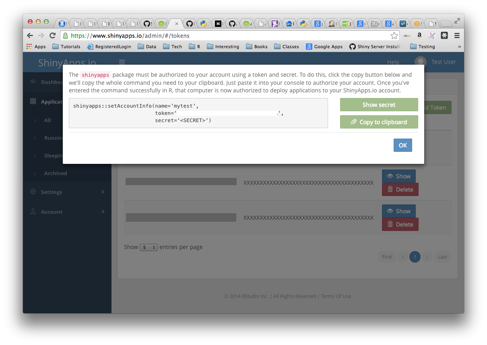
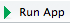
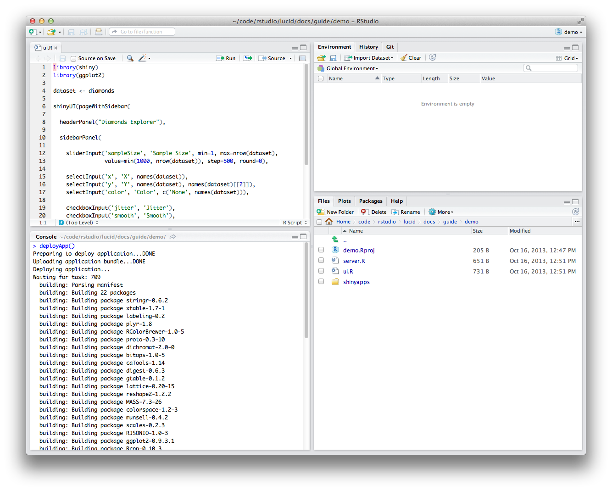
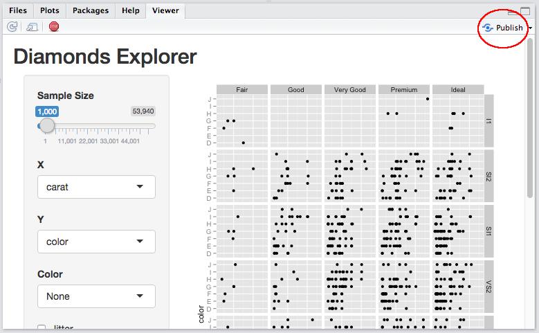
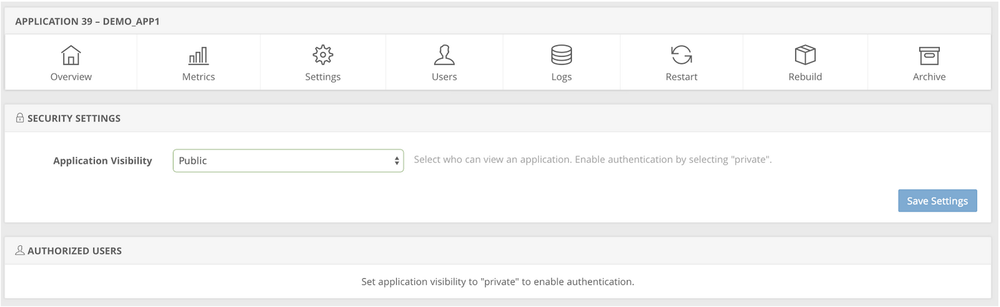
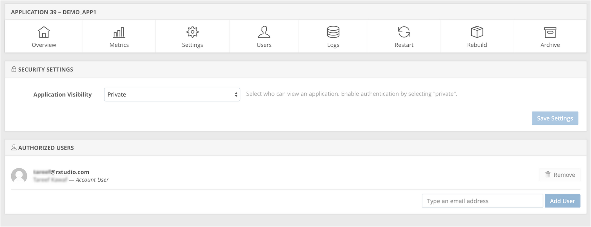
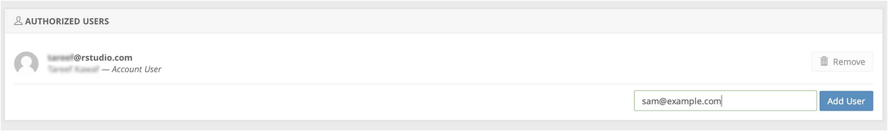

Getting started with shinyapps.io
Shinyapps.io is a platform as a service (PaaS) for hosting Shiny web apps (applications). This article will show you how to create a shinyapps.io account and deploy your first application to the cloud.
Before you get started with shinyapps.io, you will need:
- An R development environment, such as the RStudio IDE
- The latest version of the rsconnect R package
How to install rsconnect
The rsconnect package deploys applications to the shinyapps.io service. The rsconnect package is now hosted on CRAN. You can install it by running the R command:
install.packages('rsconnect')After the rsconnect package has been installed, load it into your R session:
library(rsconnect)Create a shinyapps.io account
Go to shinyapps.io and click “Dashboard.” The site will ask you to sign in using your email and password, your Google account, or your GitHub account.
The first time you sign in, shinyapps.io prompts you to set up your account. Shinyapps.io uses the account name as the domain name for all your apps. Account names must be between four and 63 characters and can contain only letters, numbers, and dashes (-). Account names may not begin with a number or a dash, and they can not end with a dash (see RFC 952). Some account names may be reserved.
Configure rsconnect
Once you set up your account in shinyapps.io, you can configure the rsconnect package to use your account. Shinyapps.io automatically generates a token and secret for you, which the rsconnect package can use to access your account. Retrieve your token from the shinyapps.io dashboard. Tokens are listed under Tokens in the menu at the top right of the shinyapps dashboard (under your avatar).

You can configure the rsconnect package to use your account with two methods:
Method 1
Click the show button on the token page. A window will pop up that shows the full command to configure your account using the appropriate parameters for the rsconnect::setAccountInfo function. Copy this command to your clip board, and then paste it into the command line of RStudio and click enter.

Method 2
Run the ‘setAccountInfo’ function from the rsconnect package passing in the token and secret from the Profile / Tokens page.
rsconnect::setAccountInfo(name="<ACCOUNT>", token="<TOKEN>", secret="<SECRET>")Once you have configured your rsconnect installation, you can use it to upload applications to shinyapps.io. In the second part of this guide, we will build a demo application, upload it to shinyapps.io, and create a password for the application.
If you’re using the RStudio IDE, you can manage your shinyapps.io accounts by going to Tools -> Global Options -> Publishing.
A Demo app
For this guide, we created an RStudio project named “demo” that contains a Shiny application to upload to shinyapps.io. Follow these steps to create your own Shiny app.
Install application dependencies
The demo application we will deploy requires the ggplot2 package and the shiny package. Ensure that any package required by your application is installed locally before you deploy your application:
install.packages(c('ggplot2', 'shiny'))ui.R and server.R
We placed two Shiny source files, ui.R and server.R, in our demo application. You can cut and paste the code below to make your own Shiny application:
server.R
library(shiny)
library(ggplot2)
function(input, output) {
dataset <- reactive({
diamonds[sample(nrow(diamonds), input$sampleSize),]
})
output$plot <- renderPlot({
p <- ggplot(dataset(), aes_string(x=input$x, y=input$y)) + geom_point()
if (input$color != 'None')
p <- p + aes_string(color=input$color)
facets <- paste(input$facet_row, '~', input$facet_col)
if (facets != '. ~ .')
p <- p + facet_grid(facets)
if (input$jitter)
p <- p + geom_jitter()
if (input$smooth)
p <- p + geom_smooth()
print(p)
}, height=700)
}ui.R
library(shiny)
library(ggplot2)
dataset <- diamonds
fluidPage(
titlePanel("Diamonds Explorer"),
sidebarPanel(
sliderInput('sampleSize', 'Sample Size', min=1, max=nrow(dataset),
value=min(1000, nrow(dataset)), step=500, round=0),
selectInput('x', 'X', names(dataset)),
selectInput('y', 'Y', names(dataset), names(dataset)[[2]]),
selectInput('color', 'Color', c('None', names(dataset))),
checkboxInput('jitter', 'Jitter'),
checkboxInput('smooth', 'Smooth'),
selectInput('facet_row', 'Facet Row', c(None='.', names(dataset))),
selectInput('facet_col', 'Facet Column', c(None='.', names(dataset)))
),
mainPanel(
plotOutput('plot')
)
)Test your application
Test that your application works by running it locally. Set your working directory to your app directory, and then run:
library(shiny)
runApp()If you’re using the RStudio IDE, you can also run your application by clicking the Run App button on the editor toolbar.

Now that the application works, let’s upload it to shinyapps.io.
Deploying apps
To deploy your application, use the deployApp command from the rsconnect packages.
library(rsconnect)
deployApp()
If you’re using the RStudio IDE, you can also deploy your application by clicking the Publish button while viewing the application.

Once the deployment finishes, your browser should open automatically to your newly deployed application.
Congratulations! You’ve deployed your first application. :-)
Feel free to make changes to your code and run deployApp again. rsconnect can deploy an app much more quickly after the first deployment.
Package dependencies
When you deploy your application, the rsconnect package attempts to detect the packages that your application uses. rsconnect sends this list of packages and their dependencies along with your application to the shinyapps.io service. Then shinyapps.io builds and installs the packages into the R library for your application. The first time you deploy your application, it may take some time to build these packages (depending on how many packages are used). However, you will not wait for these packages to build during future deployments (unless you upgrade or downgrade a package).
Package sources
Currently the shinyapps.io service supports deploying packages installed from CRAN, GitHub, and BioConductor. We will look to add support for R-Forge packages in the future.
Important note on GitHub packages
Only packages installed from GitHub with devtools::install_github in version 1.4 (or later) of devtools are supported. Packages installed with an earlier version of devtools must be reinstalled before you can deploy your application. If you get an error such as “PackageSourceError” when you attempt to deploy, check that you have installed any package from Github with devtools 1.4 or later.
Application instances
Shinyapps.io hosts each app on its own virtualized server, called an instance. Each instance runs an identical copy of the code and packages that you deployed (called the image).
When you deploy an app, shinyapps.io creates a new image with the updated code and packages, and starts one or more instances with the new image. If the app was previously deployed, shinyapps.io shuts down and destroys the old instances. Consider a few implications of this arrangement:
Data written by an application to the local filesystem of an instance will be lost when you re-deploy the app. Additionally, the distributed nature of the shinyapps.io platform means that instances may be shut down and re-created at any time for maintenance or to recover from server failures.
It is possible to have more than one instance of an application. This situation means that multiple instances of an application do not share a local filesystem. A file written to one instance will not be available to another instance.
Shinyapps.io limits the amount of system resources an instance can consume. The amount of resources available to an instance will depend on its type. The table below outlines the various instance types and how much memory is allowed. By default, shinyapps.io deploys all applications on ‘medium’ instances, which are allowed to use 512 MB of memory.
| Instance Type | Memory |
|---|---|
| small | 256 MB |
| medium (default) | 512 MB |
| large | 1024 MB |
| xlarge | 2048 MB |
| xxlarge | 4096 MB |
Note: Instance types and limits are not finalized; RStudio may change them in the future.
Application logging
If you’re having problems with your application, it may be helpful to be able to see the log messages it’s producing. You can use the rsconnect::showLogs() function to show the log messages of a deployed application. This log will include both stdout (log lines producted via print or cat) and stderr (log lines produced by message, warning, stop). You can even use the streaming=TRUE option to specify that you want to continuously monitor the file for changes; this will listen for log messages until you interrupt R (typically by pressing Escape). If you deployed your application using an older version of the rsconnect package, you will need to redeploy it (deployApp(upload=FALSE)) before you can use logging.
Configuring applications
You can change the instance type used by an application with the configureApp function from the rsconnect package. To change the instance type of your application (here from medium to small), run:
rsconnect::configureApp("APPNAME", size="small")This change will redeploy your application using the small instance type.
You can also change the instance type used by an application from the shinyapps.io dashboard. To do this, log in to shinyapps.io, select the application that you wish to configure, and then open the Settings tab.
To learn more about instances and other details of the shinyapps.io architecture, read Scaling and Performance Tuning. The guide will also show you several advanced options for fine tuning the performance of your apps on shinyapps.io.
Application authentication
With shinyapps.io, you can limit the access to your application by enabling authentication. Only users who log-in with valid credentials will be able to view or use the app.
To enable authentication in the administrative UI, select the application to modify and click on the Users tab.
Here is a sample application with the default visibility settings:

Change the Application Visibility to Private and click on Save Settings. Changing the visibility of your application will require a restart of the application. The Owner of the account and other members of the account will automatically be included in the list of authorized users.

After the application is restarted you can add authorized users by entering their email addresses and clicking on Add User.

Each user will receive an email from shinyapps.io with an invite to view your application. If a user does not already have an authenticated account on shinyapps.io, they will be able to create one by authenticating through one of the following three methods:
- Google Authorization
- GitHub authorization
- Shinyapps.io authentication
Shinyapps.io will prompt each visitor to your app for a username and password if they have not been authenticated. Only users who log-in with valid credentials will be able to view or use the app.
If you currently use the pre-beta authentication scheme, please upgrade to the new system by January 28, 2015 as we will be deprecating support for the old authentication system during the beta. For instructions on how to upgrade, please read the guide here.
Terminate an app
You can remove an app on shinyapps.io from the web with the terminateApp command. To use it, run
terminateApp("<your app's name>")terminateApp requires one argument, the name of the app that you would like to terminate (as a character string). This name should correspond with one of the apps in your shinyapps.io account.
When you run terminateApp shinyapps.io will close your app, but the app will remain archived in your shinyapps.io account. This creates efficiencies if you later decide to redeploy your app with deployApp.
You can also terminate an app from your shinyapps.io dashboard. To do this, log in to shinyapps.io, select the app that you wish to terminate and then click “Archive.”
Getting help
To seek and share advice about shinyapps.io, please visit the Shinyapps.io google group.
Recap
Shinyapps.io is an online service for hosting Shiny apps in the cloud. RStudio takes care of all of the details of hosting the app and maintaining the server, which lets you focus on writing great apps!
To use shinyApps.io
- Install the rsconnect R package from github
- Create an account at shinyapps.io
- Use the tokens generated by shinyapps.io to configure your
rsconnectpackage. - Deploy apps with
rsconnect::deployApp - Terminate apps with
rsconnect::terminateApp
You can also use shinyapps.io to create secure apps, and manage your authorized users.
Learn more
For more on this topic, see the following resources: